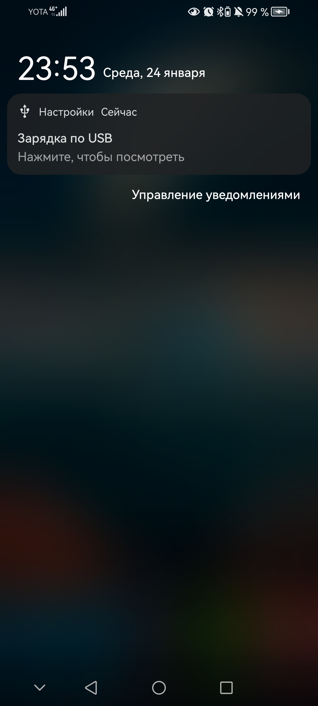
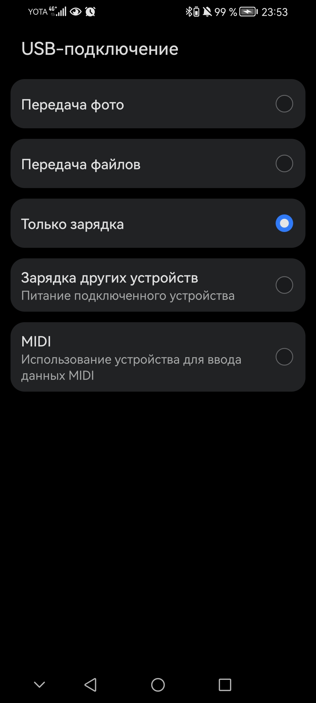
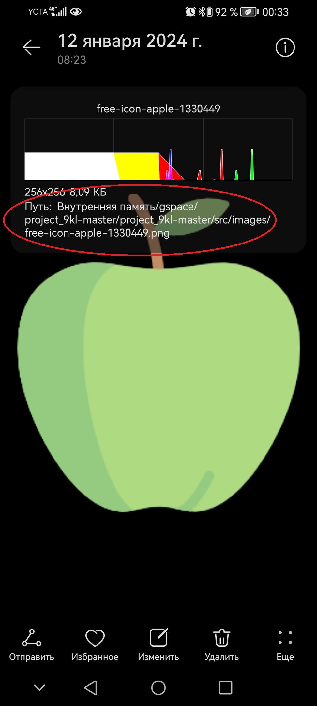

Перенос файла с телефона на пк и наоборот
Рассмотрим пример ниже, чтобы понять заголовок этой страницы:
Вы с фоткали с телефона какую-то картинку, её надо перенести на пк(ноутбук). Как это сделать?
Для начала надо подготовить компоненты:
- Ваш телефон (где находится картинка которая нам нужна)
- Пк или ноутбук, на который надо перекинуть
- Провод от зарядки

Преступим к самому процессу:
- Вытащите провод от зарядки, которым вы подзаряжаете свой телефон.
- Найдите вот такое отверстие или как его называют порт.
- Один конец провода подключите к телефону, другой к пк или ноутбуку.
- Как только вы разблокируете телефон, вылезет сообщение. Нажмите на него и переключите с Только зарядка на Передача фото (картинка №1). Если вы случайно закрыли панельку USB-подключение или она не вылезла, то вы можете высунуть конец провода из телефона, и вставить его обратно.
- Осталось узнать путь к вашей фотографии.


№1

№2
№3
Путь - это маршрут. Он имеет остановки, которые в нашем случае, называются папками. На телефонах и пк все лежит в папочках, поэтому найти нужную фотку будет не просто.
Чтобы найти путь к вашей фотографии надо:
- Открыть галерею.
- Выбрать картинку которую вы собираетесь перекинуть.
- Найдите либо три точки или значок i(обозначающий информацию).Если у вас i то просто нажмите на нее. Если три точки, то найдите раздел свойства и нажмите на него.
- Теперь надо найти строчку с путем. 